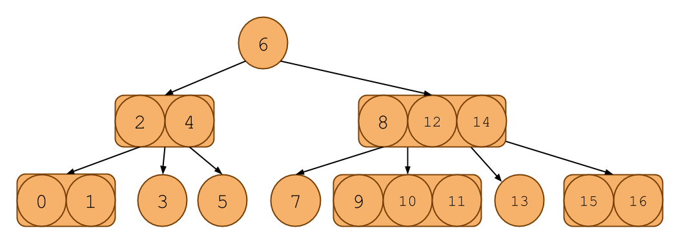
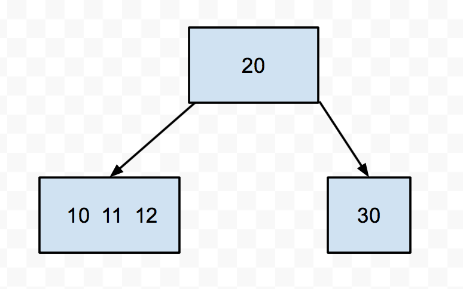
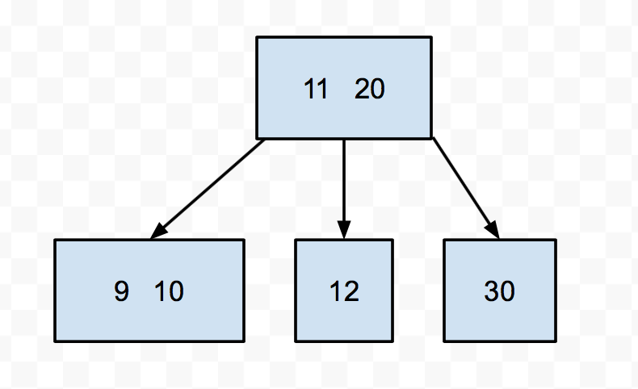
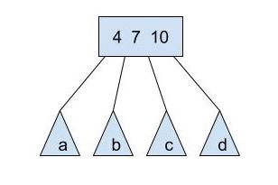
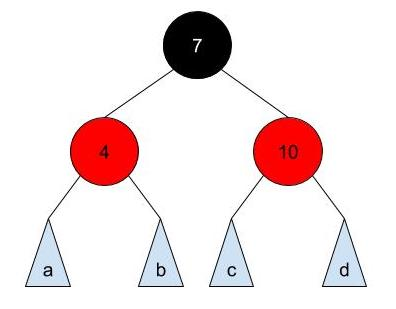
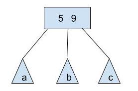
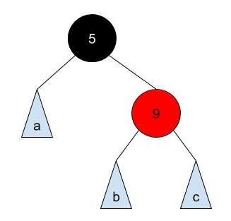
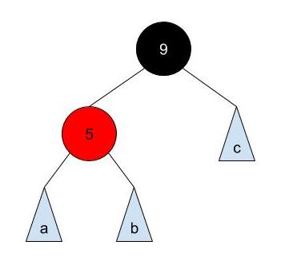

Lab 12 was cancelled to give you an additional project work day for Tablut. There was nothing to submit for that lab day but we have preserved the readings on this page because they may be helpful for homework 7.
A. Intro: Balancing search trees
An Overview of Balanced Search Trees
Over the past couple of weeks, we have analyzed the performance of algorithms for access and insertion into binary search trees under the assumption that the trees were balanced. Informally, that means that the paths from root to leaves are all roughly the same length, and that we won't have to worry about lopsided trees in which search is linear rather than logarithmic.
This balancing doesn't happen automatically, and we have seen how to insert items into a binary search tree to produce worst-case search behavior. There are two approaches we can take to make tree balancing happen: incremental balance, where at each insertion or deletion we do a bit of work to keep the tree balanced; and all-at-once balancing, where we don't do anything to keep the tree balanced until it gets too lopsided, then we completely rebalance the tree.
In the activities of this segment, we start by analyzing some tree balancing code. Then we explore how much work is involved in maintaining complete balance. We'll move on to explore two kinds of balanced search trees, B trees and red-black trees.
B. B-trees
2-4 Trees
Let us examine 2-4 trees that guarantee O(log(n)) depth in any case. That is, the tree is always almost balanced.
In a 2-4 tree, also known as a 2-3-4 tree, each node can have up to 3 keys in it. The additional invariant is that any non-leaf node must have one more child than it does keys. That means that a node with 1 key must have 2 children, a node with 2 keys must have 3 children, and a node with 3 keys must have 4 children. That's why it's called a 2-3-4 tree.
Here's an example of one:

It looks like a binary search tree, except each node can contain 1, 2, or 3 items in it. Notice that it even follows the ordering invariants of the binary search tree.
Searching in a 2-4 tree is much like searching in a binary search tree. Like a BST, if there is only one key in a node, then everything to the left of the key is less than it and everything to the right is greater. If there are 2 keys, say A and B, then the leftmost child will all have keys less than or equal A, the middle child will have keys between A and B and the rightmost child will have keys greater than or equal to B. You can extend this to the 3 key case as well.
Insertion into a 2-4 Tree
Although searching in a 2-4 tree is like searching in a BST, inserting a new item is a little different.
First of all, we always insert the new key at the leaf node. We must find the correct place for the key that we insert to go, by traversing down the tree, then insert the new key in an appropriate place in the existing leaf.
For example, say we are inserting 10, and we traverse down the tree until we find a leaf with 2 other elements, 8, 11. Then, we can just insert 10 between 8 and 11, and the leaf now has three elements: 8, 10, 11.
However, what if we come across a node that already has 3 keys, such as 8, 9, and 11? We'd like to put the new item here, but it won't fit, because each node can only have up to 3 keys in it. What should we do?
Here, we do NOT add the item as a new child of the node. Instead, we add the key temporarily to the node, and push one of the middle keys (note that the choice of which middle key to push up is arbitrary, and will be clearly specified in any example we ask of you) up into the parent node and split the remaining two keys into two 1-key nodes (Because we are doing this from the top down, the parent will always have room). Then we add the new item to one of the split nodes.
For instance, say we had this 2-4 tree:

Let's try to insert 9 into this tree. We see it's smaller than 20, so we go down to the left. Then we find a node with 3 keys. We push up the middle (11), then split the 10 and the 12. Then we put the 9 in the appropriate split node.

There is one little special case we have to worry about when it comes to inserting, and that's if the root is a 3-key node. After all, roots don't have a parent. In that case, we still push up the middle key and instead of giving it to the parent, we make it the new root.
Self-test: Growing a 2-4 Tree
Suppose the keys 1, 2, 3, 4, 5, 6, 7, 8, 9, and 10 are inserted sequentially into an initially empty 2-4 tree. Which insertion causes the second split to take place? Assume we push up the left middle key when we try to insert into a node that is already full.
- 2 ||| Incorrect.
- 3 ||| Incorrect.
- 4 ||| Incorrect.
- 5 ||| Incorrect
- 6 ||| Correct! The insertion of 4 splits the 1-2-3 node. Then the insertion of 6 splits the 3-4-5 node.
- 7 ||| Incorrect.
- 8 ||| Incorrect.
- 9 ||| Incorrect.
- 10 ||| Incorrect.
B-trees
A 2-4 tree is a special case of a structure called a B-tree. What varies among B-trees is the number of keys/subtrees per node. B-trees with lots of keys per node are especially useful for organizing storage of disk files, for example, in an operating system or database system. Since retrieval from a hard disk is quite slow compared to computation operations involving main memory, we generally try to process information in large chunks in such a situation, in order to minimize the number of disk accesses. The directory structure of a file system could be organized as a B-tree so that a single disk access would read an entire node of the tree. This would consist of (say) the text of a file or the contents of a directory of files.
C. Red-Black Trees
We have seen that B-trees are balanced, guaranteeing that a path from the root to any leaf is almost O(log(n)). However, B-trees are notoriously difficult and cumbersome to code, with numerous corner cases for common operations.
A Red-Black tree is a usual binary search tree, but it has additional invariants related to "coloring" each node red or black and the structure of the tree. If these are mainted then there will be an isometry (one-to-one mapping) between 2-4 trees and Red-Black trees!
The conseqeunce is quite astounding: Red-Black trees maintain the balancedness of B-trees while inheriting all normal binary search tree operations (A Red-Black tree IS a binary search tree) with additional housekeeping. In fact, Java's java.util.TreeMap and java.util.TreeSet are implemented using Red-Black trees!
2-4 tree ↔ Red-Black tree
Notice that a 2-4 tree can have 1, 2, or 3 elements per node, and 2, 3, or 4 pointers to its children. Consider the following B-tree node:

a, b, c, and d are pointers to its children nodes, therefore, its subtrees. a will have elements less than 4, b will have elements between 4 and 7, c will have elements between 7 and 10, and d will have elements greater than 10.
Let's transform this into a "section" in a Red-Black tree that represents the above node and its children pointers:

For each node in the 2-4 tree, we have a group of normal binary search tree nodes that correspond to it:
Middle element ↔ black node that is the right or left child of its parent node. Left element ↔ red node on the left of the black node. Right element ↔ red node on the right of the black node.
Notice that a, b, c, and d are also "sections" that correspond to a 2-4 tree node. Thus, the subtrees will have black root nodes.
How about a 2-4 node with two elements?

This node can be transformed as:

or

Both are valid. However, only the second transformation is a valid Left-Leaning Red-Black Tree, which we'll discuss in the next section.
Trivially, for 2-4 node with only one element, it will translate into a single black node in a Red-Black tree.
Convince yourself that the balancedness of the 2-4 tree still holds on a Red-Black tree and that the Red-Black tree is a binary search tree.
Optional Exercise:
Read the code in RedBlackTree.java and BTree.java. Then, in RedBlackTree.java, fill in the implementation for buildRedBlackTree which returns the root node of the Red-Black tree which has a one-to-one mapping to a given 2-4 tree. For 2-4 tree node with 2 elements in a node, you must use the right element as the black node to pass the autograder tests, so you should be making a left leaning red black tree. For the example above, you must use the first representation of Red-Black tree where 5 is the black node.
Red-Black trees are Binary Search Trees
As stated above, Red-Black trees are in fact binary search trees: a node's left subtree contains all elements less than that node's element and the same holds for the right subtree.